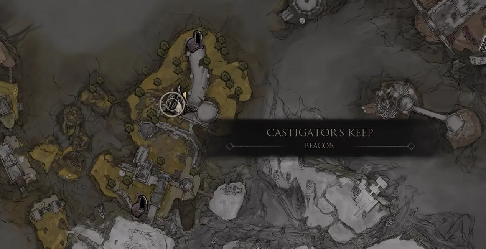
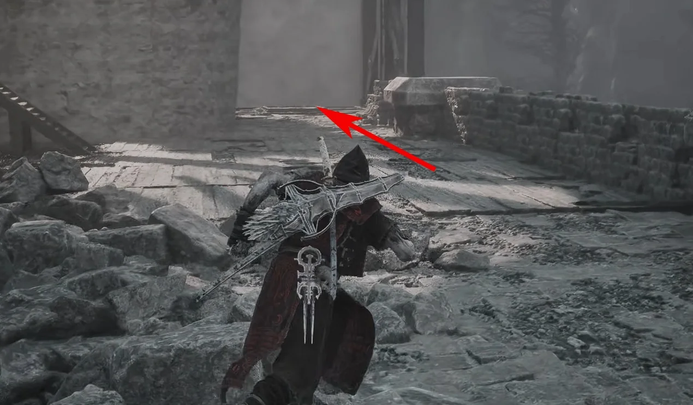
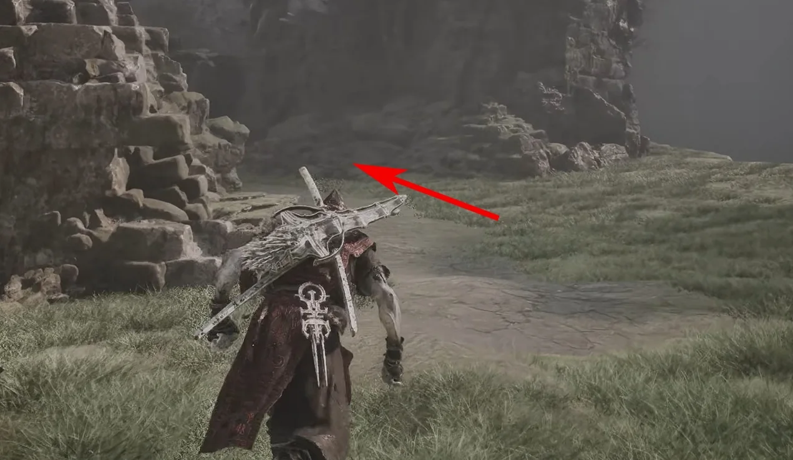
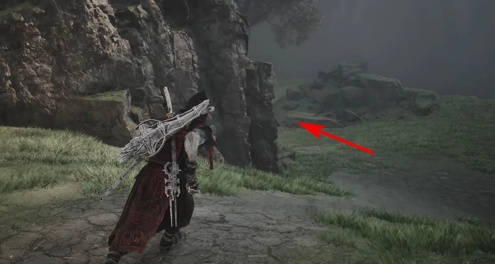
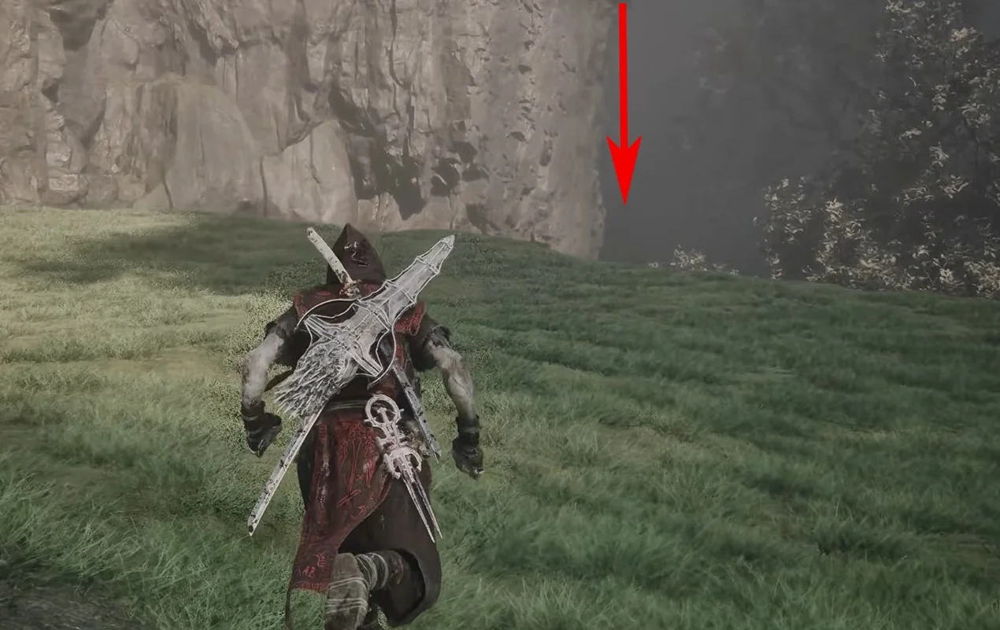
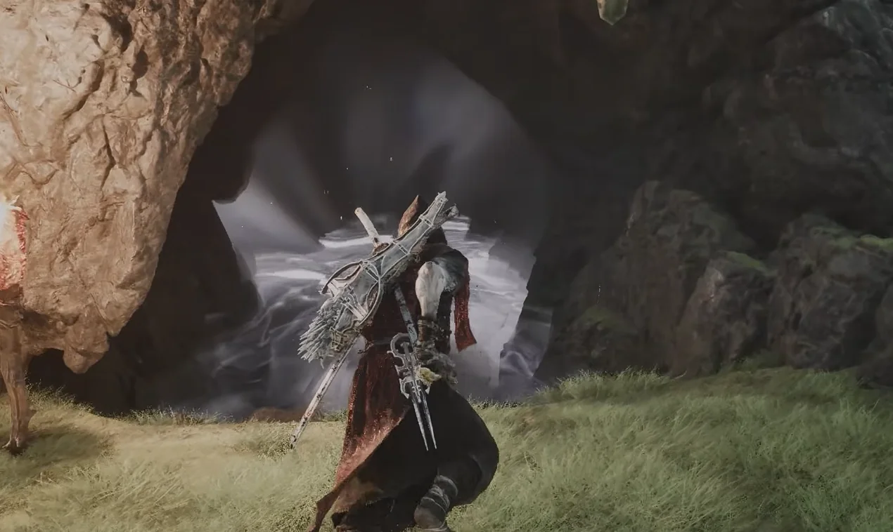
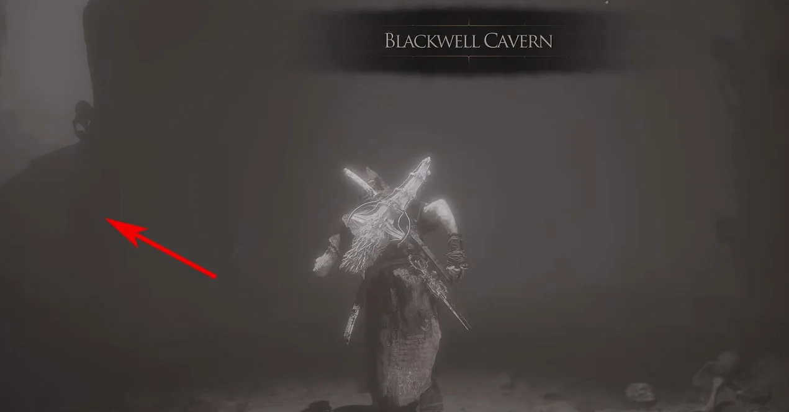
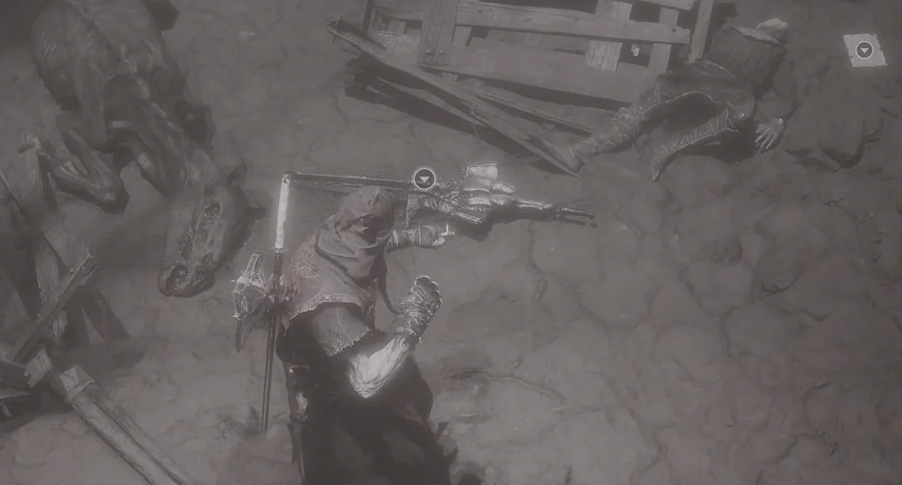
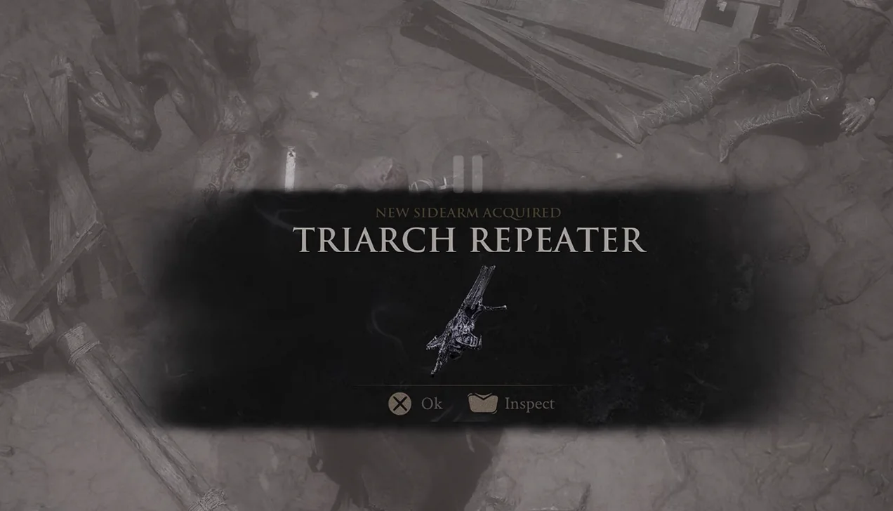

Sidearm acquisition · Mammon
Triarch
Repeater
Triarch Repeater lies on the ground in Blackwell Cavern. The route starts at Castigator's Keep Beacon and uses the lift on the right.
- Region
- Mammon
- Location
- Blackwell Cavern
- Type
- Sidearm

Route 01Fast travel to Castigator's Keep Beacon.
Route 02Take the lift on the right of the Beacon.
Route 03After the lift reaches the lower level, follow the red arrow across the open ground.
Route 04Drop down at the marked ledge.
Route 05Continue forward and take the left-hand route into Blackwell Cavern.
Route 06Inside the cavern, keep left at the marked turn.
Route 07Follow the path to the lit section of the cave.
Route 08The Triarch Repeater is on the ground beside the remains. Interact with it to collect the sidearm.
Route 09The acquisition notification confirms that Triarch Repeater has been collected.